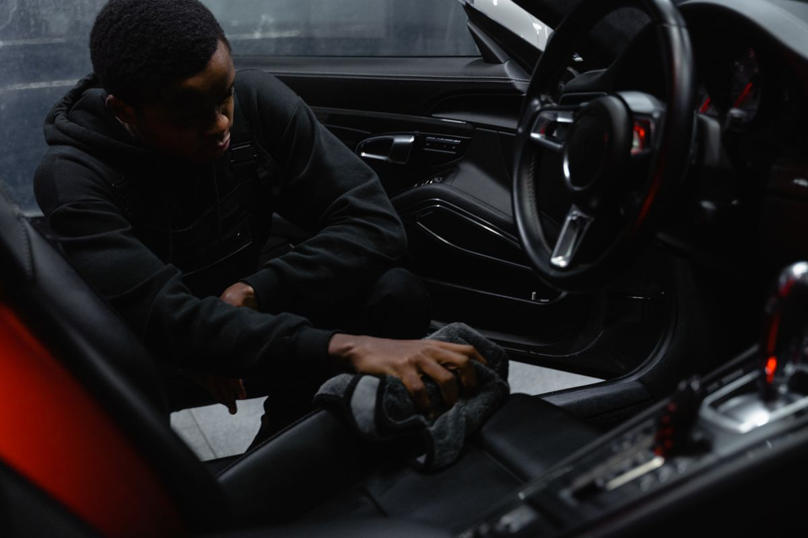
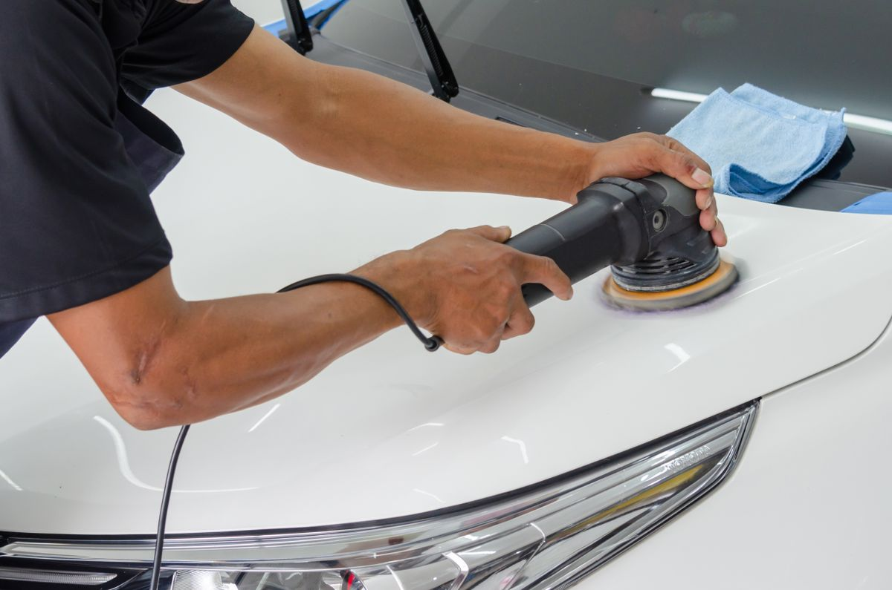

01
Detaylı İç Temizlik
Koltuk, döşeme ve iç yüzeyler için malzemeye uygun temizlik. Kabinin günlük kullanımda kirlenen ayrıntılarına odaklanan bakım.
İÇ MEKÂN BAKIMI— OTOMOBİLİNİZE ÖZENLE
Aracınızın karakterini ortaya çıkaran bakım. İç mekândan dış yüzeye, temizliğin ve korumanın her adımına dikkatle yaklaşıyoruz.
Hizmetleri İnceleTemizlik. Bakım. Koruma.
01 / HİZMETLERİMİZ
Aracınızın ihtiyaçlarına göre şekillenen, temizlikten yüzey korumaya uzanan bakım seçenekleri.
Koltuk, döşeme ve iç yüzeyler için malzemeye uygun temizlik. Kabinin günlük kullanımda kirlenen ayrıntılarına odaklanan bakım.
İÇ MEKÂN BAKIMIBoyanın durumuna uygun yöntemlerle yüzey görünümünü ve parlaklığını iyileştirmeye yönelik bakım.
YÜZEY İYİLEŞTİRMEYüzey hazırlığından sonra uygulanan koruyucu kaplama. Sağladığı koruma, ürüne ve kullanım koşullarına bağlıdır.
KAPLAMA UYGULAMASIBoyaya uygun koruyucu ürünlerle yüzey bakımı. Korumanın sürdürülmesi için düzenli bakım gerekir.
DIŞ YÜZEY BAKIMIUygulama kapsamı, aracın yüzey durumu ve bakım ihtiyacı değerlendirilerek belirlenir.
BAKIM SÜRECİMİZ
İhtiyacı anlamaktan uygulamaya, bakım sürecini üç adımda planlıyoruz.
Araç ve yüzey ihtiyaçlarının değerlendirilmesi.
Uygun bakım yönteminin belirlenmesi.
Planlanan bakım işlemlerinin gerçekleştirilmesi.
BAKIMA YAKINDAN BAKIŞ
Bu bölümdeki fotoğraflar temsili stok görsellerdir; Ardıç Oto Detay'ın gerçek çalışmalarını göstermez.

Koltuk, döşeme ve kapı eşikleri gibi iç yüzeylerde, malzemeye uygun ürün ve yöntemlerle temizlik yapılır. Günlük kullanımda kirlenen ayrıntılara özen gösterilir.

Boya yüzeyi incelenerek uygun ürün ve uygulama yöntemi seçilir. Amaç, yüzeyin görünümünü ve parlaklığını iyileştirmektir; sonuç boyanın durumuna bağlıdır.
02 / HAKKIMIZDA
Ardıç Oto Detay, otomobil bakımında dikkatli uygulama ve açık iletişim anlayışını temsil eden kurgusal bir işletmedir. Bu şablon, söz konusu yaklaşımı sade ve anlaşılır biçimde tanıtmak için hazırlanmıştır.
Hizmet anlayışımız; önce aracın ihtiyacını anlamak, yüzeye uygun yöntemi seçmek ve bakım sürecini anlaşılır biçimde paylaşmak üzerine kuruludur.
03 / İLETİŞİM
Bu alan, işletmenin gerçek iletişim bilgileriyle özelleştirilmek üzere hazırlanmıştır.
Ardıç Oto Detay kurgusal bir işletmedir. Bu sayfadan arama, mesaj veya randevu talebi gönderilmez.